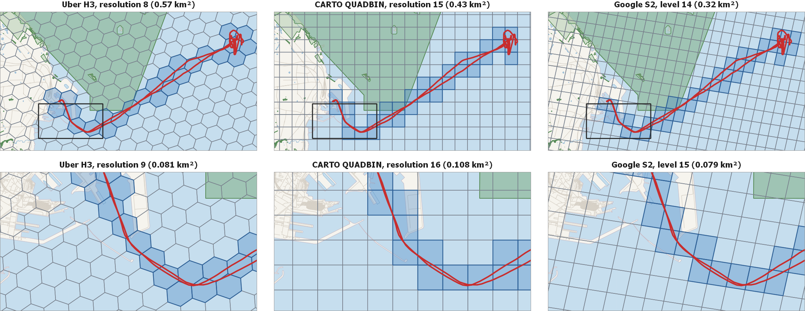

Tabla de contenidos
Un sistema de cuadrícula global discreta (DGGS) divide la Tierra en una jerarquía de celdas, cada una identificada por un entero de 64 bits, de modo que una posición se convierte en un identificador de celda y una prueba de contención se convierte en una comparación de enteros. MobilityDB admite tres de ellos, y un tipo de índice de celda temporal registra el movimiento de un objeto como la secuencia de celdas que ocupa a lo largo del tiempo. Cada cuadrícula tesela la Tierra, y estas tres la teselan globalmente: un identificador de celda nombra una celda de una de ellas dondequiera que se lea, que es lo que permite a un tipo temporal transportar celdas y nada más.
| Cuadrícula | Tipo de celda | Tipo de conjunto | Tipo temporal | Resoluciones |
|---|---|---|---|---|
| Uber H3 | h3index | h3indexset | th3index | 0–15 |
| CARTO QUADBIN | quadbin | quadbinset | tquadbin | 0–26 |
| Google S2 | s2cell | s2cellset | ts2cell | 0–30 |
Figura 16.1, “La traza de un buque AIS que sale de Frederikshavn en las tres cuadrículas, con las celdas por las que pasa la traza sombreadas y un área marina protegida en verde. La fila superior presenta la traza completa en las resoluciones cuyas celdas son más próximas en área y delinea en negro el extracto que presenta la fila inferior, una resolución más fina en cada cuadrícula. Traza del buque y áreas protegidas de los datos AIS daneses; mapa base © colaboradores de OpenStreetMap.” muestra la traza de un buque AIS que sale de Frederikshavn en las tres cuadrículas, en la resolución de cada una cuyas celdas son más próximas en área — 0,57 km² para H3, 0,43 km² para QUADBIN y 0,32 km² para S2 en esta latitud — con las celdas por las que pasa la traza sombreadas y un área marina protegida en verde. Un índice de celda temporal registra esa secuencia sombreada, de modo que la traza es una y la misma y cada cuadrícula la expresa como una secuencia distinta de identificadores. Preguntar si el buque entró en el área protegida se convierte entonces en una prueba entre dos conjuntos de identificadores enteros en lugar de una prueba entre dos geometrías. La fila inferior presenta el extracto delineado en negro arriba, una resolución más fina en cada cuadrícula, donde cada celda ocupa aproximadamente un octavo del área de la que está encima de ella y la secuencia sigue la traza lo bastante de cerca como para representarla.
Figura 16.1. La traza de un buque AIS que sale de Frederikshavn en las tres cuadrículas, con las celdas por las que pasa la traza sombreadas y un área marina protegida en verde. La fila superior presenta la traza completa en las resoluciones cuyas celdas son más próximas en área y delinea en negro el extracto que presenta la fila inferior, una resolución más fina en cada cuadrícula. Traza del buque y áreas protegidas de los datos AIS daneses; mapa base © colaboradores de OpenStreetMap.
 |
Las tres difieren en la forma de una celda y en cómo se ramifica la jerarquía. H3 de Uber tesela la esfera en 122 celdas base en la resolución 0 y subdivide cada una en 7 hijos en cada resolución más fina, hasta la 15, de modo que una celda es un hexágono sobre un icosaedro y su identificador codifica la celda base, la resolución y la posición jerárquica. QUADBIN de CARTO se construye sobre el esquema de teselas de mapa deslizante (Web-Mercator): una única celda mundial en la resolución 0 se subdivide en cuatro hijos iguales en cada resolución más fina, hasta la 26, y el identificador codifica una etiqueta de cabecera, la resolución y las coordenadas de la tesela. S2 de Google proyecta las seis caras de un cubo circunscrito sobre la esfera y subdivide cada cara en cuatro hijos, hasta el nivel 30, de modo que una celda es un cuadrilátero esférico y el identificador codifica la cara, la posición a lo largo de una curva de Hilbert y el nivel.
Cada forma aporta algo. Un hexágono tiene seis vecinos todos a la misma distancia de su centro, de modo que un paso H3 es el mismo movimiento en todas las direcciones, que es lo que necesita un flujo o una superficie de densidad. Un cuadrado QUADBIN es una tesela de mapa deslizante, de modo que una celda ES la tesela que un servidor de mapas ya sirve y el identificador se convierte en la terna (x,y,z) y en la cadena quadkey de ese ecosistema. Una celda S2 es una celda de un árbol cuaternario de una cara del cubo proyectada sobre la esfera, de modo que los descendientes de una celda ocupan un intervalo contiguo de la curva de Hilbert y una prueba de ascendencia es un par de comparaciones de enteros. Sus autores documentan las cuadrículas en h3geo.org, CARTO y s2geometry.io, y la familia a la que pertenecen en Discrete global grid.
Responden a las mismas preguntas, de modo que este capítulo presenta cada operación una sola vez y nombra la cuadrícula únicamente donde la respuesta depende de ella. S2 llama nivel a una resolución; las dos palabras denotan la misma cantidad.
Un tipo de índice de celda comparte su representación en disco con tbigint: ambos almacenan un entero temporal de 64 bits. El tipo SQL distinto existe para que el verificador de tipos rechace una función específica de celdas aplicada a una trayectoria tbigint arbitraria, y a la inversa. Las conversiones desde y hacia tbigint son de coerción binaria solamente, sin coste en tiempo de ejecución, y explícitas, de modo que una consulta escribe ::.
Como con otros tipos temporales, un tipo de índice de celda tiene cuatro subtipos: Instant, secuencia discreta, secuencia continua con interpolación de pasos y SequenceSet. Los identificadores de celda son discretos, de modo que la interpolación lineal entre dos de ellos carece de sentido y siempre se usa la interpolación de pasos.
Un ráster es una teselación propia: una rejilla de píxeles tendida sobre una huella, cuya celda es un píxel. Figura en este capítulo junto a las tres rejillas globales, y se distingue de ellas en lo que lleva una celda. Una celda H3, QUADBIN o S2 lleva identidad, de modo que lo que produce una trayectoria sobre una de ellas es un índice de celda temporal; una celda de ráster lleva un valor, de modo que lo que produce una trayectoria leída contra un ráster es un tfloat de los valores por los que pasa, y no existe un tipo ráster temporal. Por eso las secciones siguientes enuncian un ráster allí donde responde la operación que responde una celda, y enuncian aparte su lectura a lo largo de un viaje.
La extensión ráster de PostGIS almacena datos de cobertura en cuadrícula (elevación, temperatura, imágenes satelitales, …) en el tipo raster. Cada ráster tiene una o más bandas; una banda contiene un arreglo 2D de valores de píxel, una extensión espacial, un tamaño de píxel y un valor centinela opcional para datos nulos (nodata).
Raquet es un formato ráster nativo en la nube que almacena teselas ráster como filas en un archivo Apache Parquet. Cada fila contiene los bytes de píxel de una tesela Web-Mercator junto con su identificador de celda QUADBIN, un entero de 64 bits que codifica el nivel de zoom y las coordenadas x/y intercaladas mediante Morton. No se requieren metadatos espaciales adicionales: el rectángulo delimitador y el mapeo de píxel a coordenadas quedan completamente determinados por el valor QUADBIN.
La mayoría de las funciones y operadores para tipos temporales descritos en los capítulos anteriores pueden aplicarse a los tipos de índices de celdas temporales. Por lo tanto, en las signaturas de las funciones, la notación base representa una cell y la notación ttype representa también un tcell. Para evitar redundancia, presentamos a continuación únicamente las funciones y los operadores específicos de los tipos de índices de celdas.
cell representa cualquier tipo de índice de celda, es decir, h3index, quadbin o s2cell, y en la posición de un nombre de función es el constructor de ese tipo,
cellset representa cualquier tipo de conjunto de índices de celdas, es decir, h3indexset, quadbinset o s2cellset,
tcell representa cualquier tipo de índice de celda temporal, es decir, th3index, tquadbin o ts2cell,
geo y tgeo representan el tipo de geometría en el que responde una cuadrícula, plana para QUADBIN y geodésica para H3 y S2.
raster es el tipo ráster de PostGIS y raquet una única tesela ráster Web-Mercator; ninguno de los dos es un tipo de celda, de modo que una operación que lee uno de ellos lo nombra.